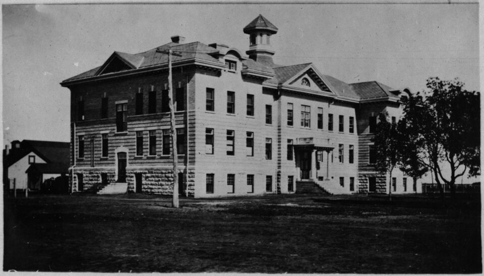
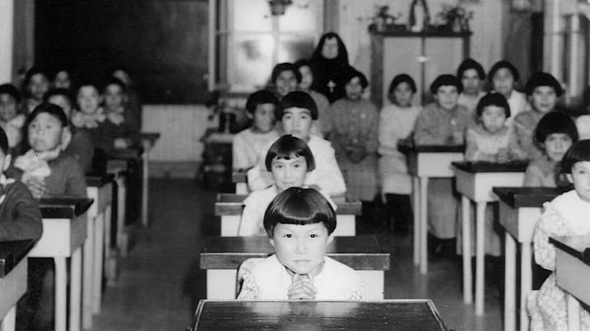
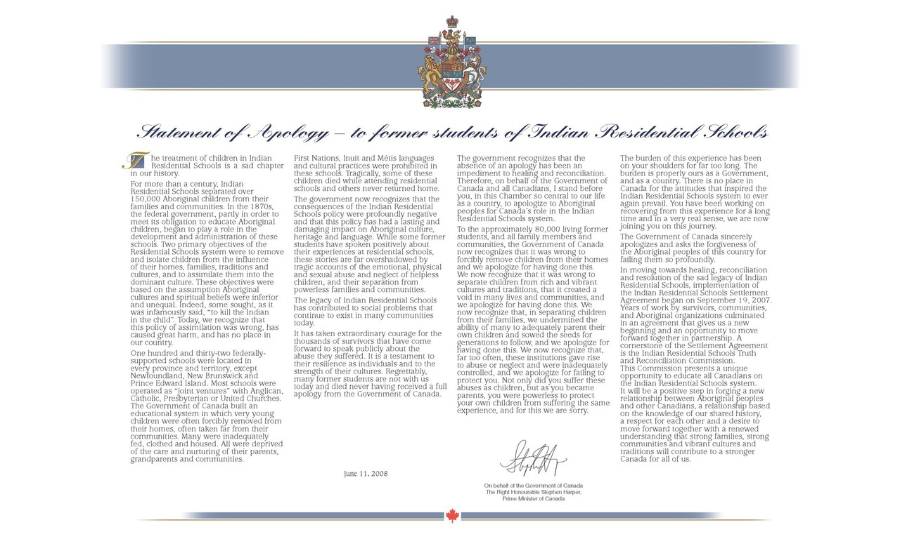
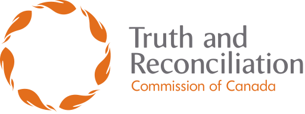
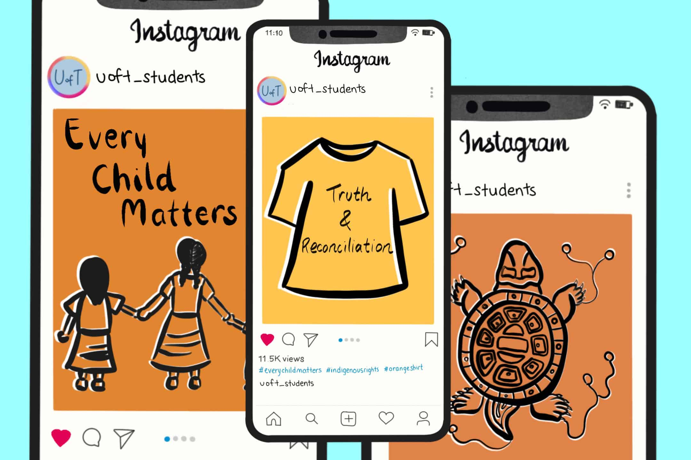

WHAT
TRC Call to Action #14 calls on Canada to recognize Indigenous languages as a vital part of culture and identity, and to support their preservation and revitalization.
This issue is not only about communication. It is about cultural survival: languages carry memory, land knowledge, family stories, songs, and ways of understanding the world.
The Numbers
What the Scale of Loss Looks Like
WHO
First Nations, Métis, and Inuit communities, Elders, language keepers, content creators, the Government of Canada, and language organizations all play a role in this issue.
WHERE
Across Canada in Indigenous communities, schools, government programs, and online platforms where language learning is shared.
Timeline
From Language Suppression to Revitalization
Language loss happened across generations. This timeline shows how past policies created harm, and how communities continue to rebuild language today.

1800sResidential Schools Begin
Indigenous children are removed from families and communities. Speaking Indigenous languages is forbidden and often punished.
Impact: Many children lose fluency and cannot pass language to the next generation.

1900sLanguage Suppression Continues
Indigenous languages are discouraged in schools, homes, and public life for more than a century.
Impact: Many communities experience a language break between generations.

2008Government Apology
Canada formally apologizes for the residential school system and acknowledges the harm caused to Indigenous communities.
Impact: Public awareness grows, but repair requires continued action.

2015Truth and Reconciliation Commission
The TRC releases 94 Calls to Action. Call to Action #14 focuses on protecting, revitalizing, and strengthening Indigenous languages.
Impact: Language preservation becomes a national responsibility.
Indigenous Languages Act
Canada passes legislation recognizing Indigenous languages as part of culture, identity, and community life.
Impact: Formal support grows for community-led language revival.

TodayRevitalization Continues
Communities, educators, Elders, and digital creators teach words, phrases, pronunciation, stories, and cultural knowledge.
Impact: Language learning becomes visible in schools, homes, and online spaces.
WHY
This became a TRC Call to Action because government policies contributed to the loss of Indigenous languages. Language is deeply connected to identity, culture, and reconciliation in Canada.
When a language disappears, traditional knowledge, stories, and unique ways of understanding the world may disappear with it.
MOST IMPORTANT TAKEAWAYS
- Every Indigenous language holds unique cultural knowledge.
- Language loss was accelerated by residential schools and government policies.
- Many Indigenous languages remain at risk today.
- Communities across Canada are leading language revitalization efforts.
- Digital tools and media are creating new opportunities for language learning and preservation.
Sources Used
This project uses the TRC Calls to Action, Government of Canada information on the Indigenous Languages Act, research about residential schools, and Indigenous creators' public social media content.
- Truth and Reconciliation Commission Calls to Action
- Government of Canada: Indigenous Languages Act
- Crystal Harrison Collin's public TikTok language-learning content
- Research and images connected to residential schools, the TRC, and Indigenous language revitalization